Hi everyone! Welcome to another Rulebook Preview. Today we are looking at 4 awesome unpublished games, many of which will be coming to Kickstarter soon. Take a look!
Crystallo
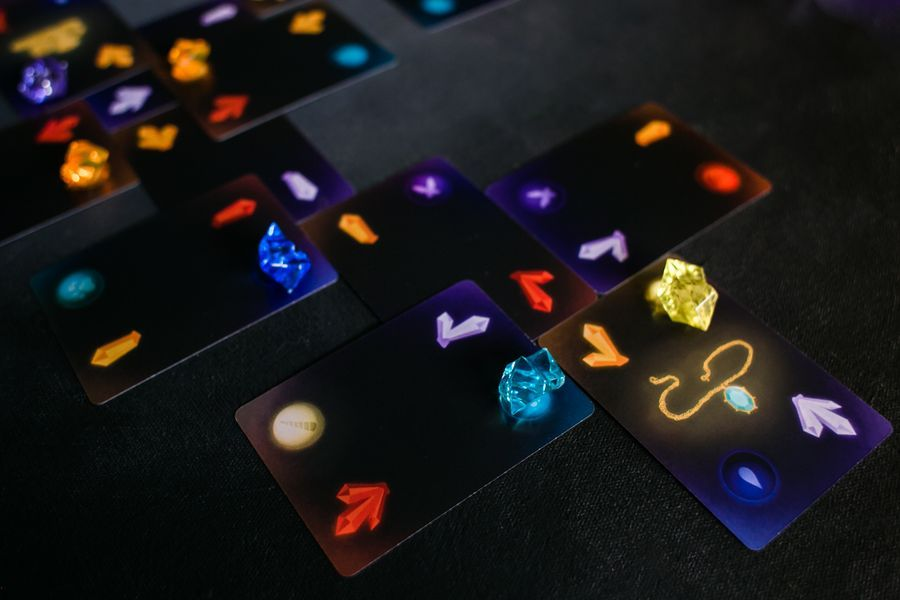A picture of Crystallo
First of all, this is a beautifully produced game by a new board game company. It won the 2018 Board Game Geek Solo Game contest, and so I was very excited to take a look at the rules. Crystallo is exclusively a solo game, but it’s also super portable and easy to learn. For a second here, I’d like to try and sell you on solo games, because just a few years ago I wouldn’t have considered purchasing a single player game. Chances are, most of the video games you’ve played are single player. Then think about things like the card game Solitaire- and I think you’ll find that there is definitely a space for an engaging solo board gaming experience.
Anyway, onto the meat of the rules. The idea of the game is that the black dragon has captured 6 magical beasts in his dungeon. You have to free them and then trap the dragon in order to win. You do this by exploring the dungeon. On each turn, you take a dungeon card and play it in the play area. The rulebook does a very nice job of showing you all of the possible configurations. If your goal was simply to connect these 2 orange crystals, you would have seven possible placements! As your play area grows, it is easy to see how the number of options for your turn would quickly multiply.
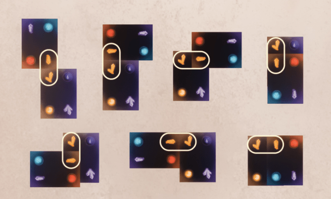The different placements
Your goal is to create crystal clusters around orbs. These crystal clusters must follow a few rules, which is explained in the rulebook and on the player aides. One caveat to be aware of: you can’t “place an orb,” which makes it more difficult to achieve these clusters. In this sense, Crystallo is similar to SET. The crystals must be all of the same color or all of a different color AND must all be of the same shape or of a different shape. Below is a great chart:
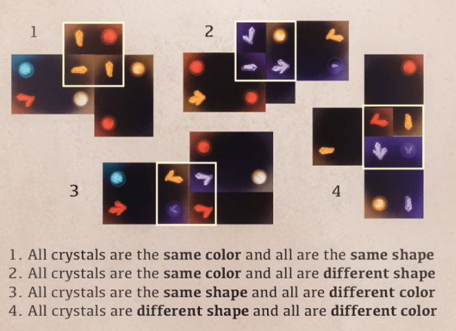Creating orbs.
Once create these orb-crystal clusters, you get closer to freeing the animals. Each of the 6 animals needs 3 orb clusters of their color to be freed. In addition, you then have to trap the black dragon! By now you are probably low on cards, so you get 9 additional cards to try and trap the dragon. You have to make 1 crystal cluster of each color to trap the dragon. If you don’t, that’s ok! You’ll score points based on how well you do. You also get points for collecting optional treasures along the way. Your goal is to get as many points as possible, and try to do better and beat your score each time you play. Fair warning, this is a tough game! I’ve heard that it is common to fail your first few games. It’s very puzzly, so if you are into that type of solitaire experience than be sure to check out Crystallo! They will be up on Kickstarter within the next couple of days.
Rulebook: No complaints about this rulebook! It was very clear and easy to understand. I especially appreciate the clear graphics and player aides. You can find the rulebook on Google Drive here. You can find their Kickstarter campaign here.
Quodd Heroes
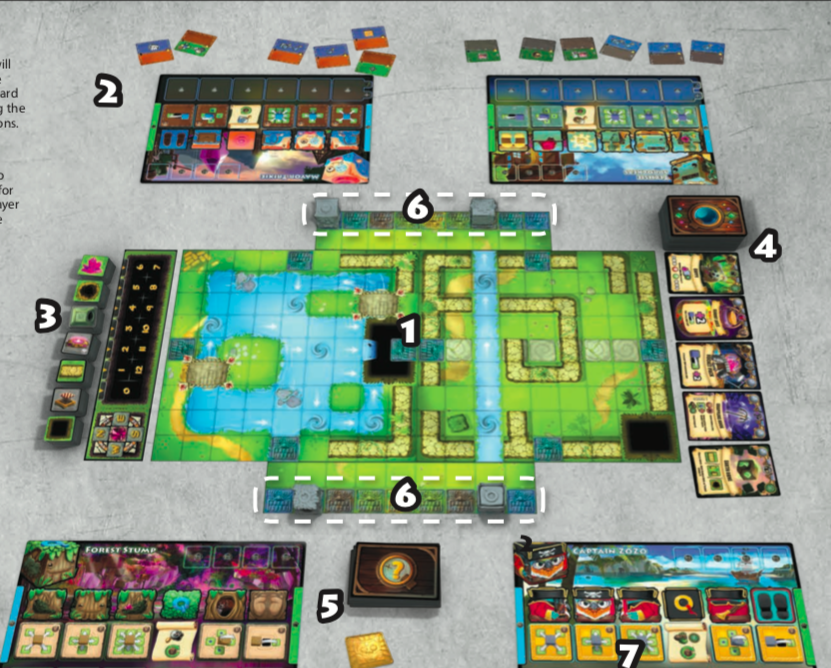Set Up Page
Quodd Heroes is a fun game that actually already had a successful Kickstarter, raising over $300,000! Congrats to the team. This game is really interesting as you have multiple different scenarios that you can choose from. This lets you pick the kind of experience you want: solo, co-op, free-for-all, teams, 1 VS. the world, etc. This also means that what you are working towards is always different. The core of the game is the same though. The idea is that these cube-shaped characters that live on a cube-shaped world recently discovered these powerful crystals that give them super-powers. The scenarios deal with how these people deal with this change to their world.
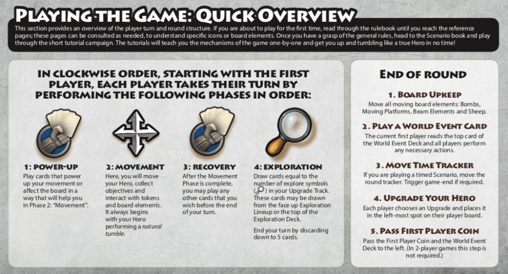The turn overview
On your turn, you’ll have the option to play power-up cards that give you bonuses to your movement. Then, you’ll be able to move once using the unique tumble mechanic. This changes the top face of your character (your character is a cube, so you have 6 possible faces). This is really important! Each face has a different ability that affects movement. Maybe you want to do this one cool thing, but that requires you to be on a certain face. To get to that face, you may have to make a suboptimal tumble movement that gets you further away from your goal! Or maybe, you’ll tumble closer to where you want to go, but now you can’t use the optimal face ability. There’s a lot to think about when deciding your moves.
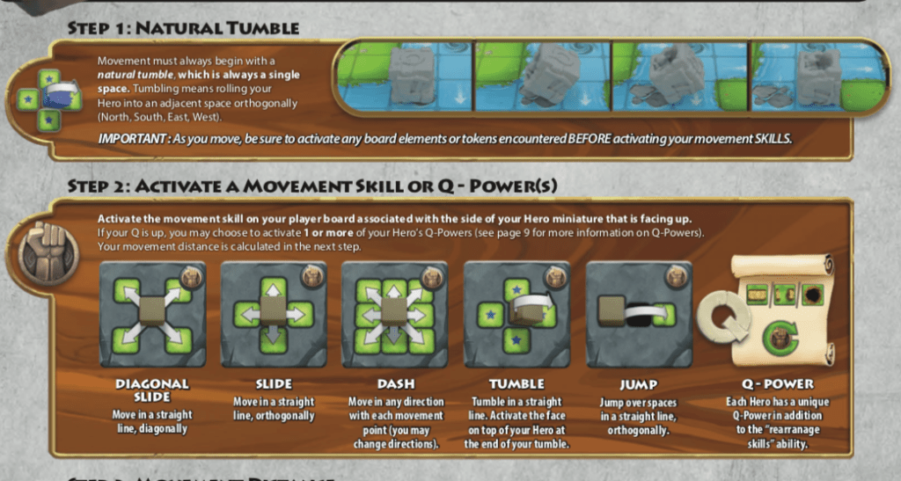Movement: the most important phase
And that’s about all there is to the core of the game! Due to the sheer number of scenarios, different rules, items, expansions, etc., I chose not to get into them here. This simple idea of tumbling and then taking a special action based on your face is really neat, and creates a lot of interesting scenarios where you may have to plan your turns far in advance. You also have to remain flexible: some circumstances might change as you are playing the game.
Rulebook: The rulebook had some excellent graphic design, and even came with a page of the storyline in comic-book form! Overall, a lot of attention was paid to the rulebook and I appreciate that a lot. You can find the rulebook here. You can check out the Kickstarter page here.
Philosophia
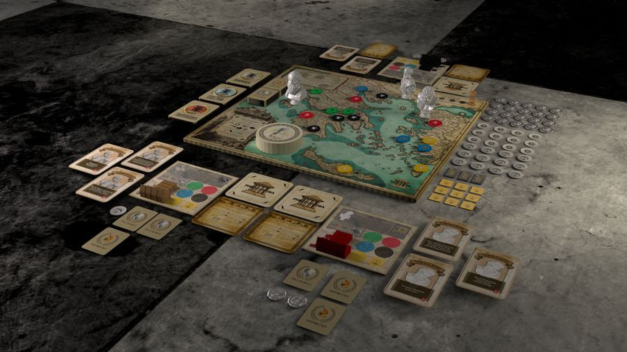Philosophia is a neat game designed by a philosophy teacher, which I thought was really cool. This game is all about achieving great wisdom, which is an interesting and refreshing goal. This is represented by gaining 3 Labyrinth tokens. You must collect these before the Romans invade and and the Ancient Greek World is destroyed. Before we jump further into these rules though, I wanted to shout out a really cool thing that the designers decided to do with the rulebook:
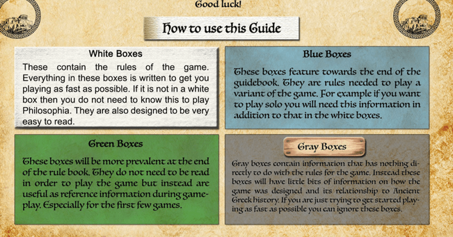Color coding the rulebook? Genius idea!
In the rules, one of the first pages tells you how to use the rules. In the above chart, they describe what each of the colors mean. I thought that this color coding was a brilliant idea, and really helped parse what information was important and what was not important to the gameplay. Very cool! Anyway, back to the rules. You play as an ancient greek philosopher and you take turns moving 1 space, and then taking 1 action. There are a lot of actions, but they are mostly self-explanatory and some are restricted by location:
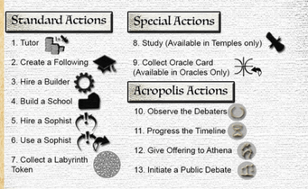The different actions in Philosophia
You can tutor to get 2 coins. These coins serve as the currency for the game, and I find it very funny that the main way these philosophers make money is by teaching others. Creating a following lets you place 1 cube at your current location. Players can only have 1 follower per location. You can hire a builder for 2 coins (represented by a builder token). On a later turn, you can build a school at a certain location by spending a builder token. Schools are really powerful since they get you closer to accomplishing your goals, and any player entering the location your school is on has to pay you 1 coin. Hiring a Sophist gives you a Sophist token for 1 coin. You use these sophists as an action to convert another player’s follower to your own. Finally, you can take 1 Labyrinth token if you meet the criteria.
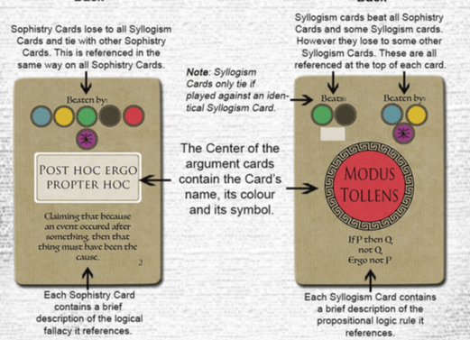
Hopefully I have not lost you, as this explanation is getting kind of long. I’ll skip to public debating, but just know that there are a bunch more actions you can do that do different things. Alright, onto the debates! First, you have to prepare for a debate by collecting Sophistry and Syllogism cards for an action (there is also a “final debate” where players can purchase these cards for 1 and 2 coins respectively). Sophistry cards are logical fallacies, but you get to take them 2 at a time. Syllogism cards are logical rules that beat all Sophistry cards, but you only get to take them 1 at a time. In the public debates, the first player plays a card face-up. The opponent gets to counter with a card. If it’s a Sophistry against a Sophistry, they tie and both players get 1 point. If a Syllogism card is played over a Sophistry, the Syllogism card wins and that player gets 2 points. So, why would you ever get Sophistry cards if they always lose? Well, if your opponent runs out of cards, you automatically get 1 point for each Sophistry card you play. I find this hilarious. You can either prepare a really solid argument with no logical fallacies, or you can prepare a lot of very silly arguments and hope you can simply outlast your opponent. Very fun. Overall, this theme appeals a lot to me and it seems like it would be somewhat educational as well to learn about different fallacies and logical truths, as well as some Ancient Greek history.
Rulebook: The rulebook is very well put together and I am a big fan of the color coding as mentioned earlier. You can check it out yourself here.
Sensor Ghosts
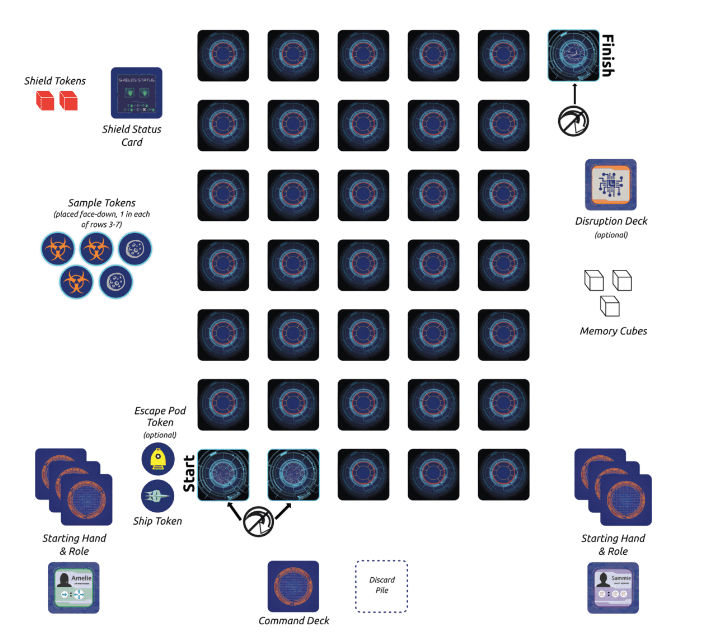
Sensor Ghosts is an interesting cooperative puzzle game for 1-2 players. This game is an interesting twist on the space genre, and has you playing as astronauts stranded in space. You want to get to Earth, but wait! They are refusing to let you land because they think that you are infected with the same virus that stranded you away from the space station in the first place. You have to get a sample for a vaccine before they let you come back to Earth. Also, the computer is evil and is listening in on your conversation with your partner. You have to cooperate, but your speech is limited! You can’t tell each-other what you have in your hand, and you can’t tell the other player what cards you are playing or what they should do.
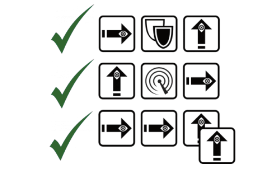Wait, I thought we wanted to go the other way?
This is a cool concept because it prevents efficient communication of information. To get around this, players might have to come up with a clever way to indicate what they have in their hand. Whatever the case, players play up to 3 cards from their hand face-down without telling their partner what they are playing face-down. These cards are then revealed. Since each card represents an action, the players might end up taking actions that are the same thing! This gets especially difficult when you are trying to move in a certain direction. Because orientation matters, you could end up playing movement cards that go in opposite directions. That’s going to make it harder to collaborate when playing out the turn. That being said, you can choose to either move or to scan in the direction you chose, so there are ways to mitigate these issues.
The actions include peeking/moving, charging shields, deep scanning, etc. You’ll probably need to use a combination of all of these in order to get back to Earth safely without dying to an asteroid or some other dangerous obstacle. You also will probably need to use these actions to locate and find a sector with a virus sample. That’s what makes this game an interesting 2 player co-op puzzle! It plays quickly, and is an interesting twist on the normal space exploration theme. I’m looking forward to seeing more about this one.
Rulebook: The rulebook is still in a prototype phase, but was still understandable to read. You can check out the rules here. Also, you can check out the Kickstarter here (currently, it redirects to a FB event, but will send you to the Kickstarter once it is live).
Which of these four games are you looking forward to? Let me know in the comments below, and thanks for reading!